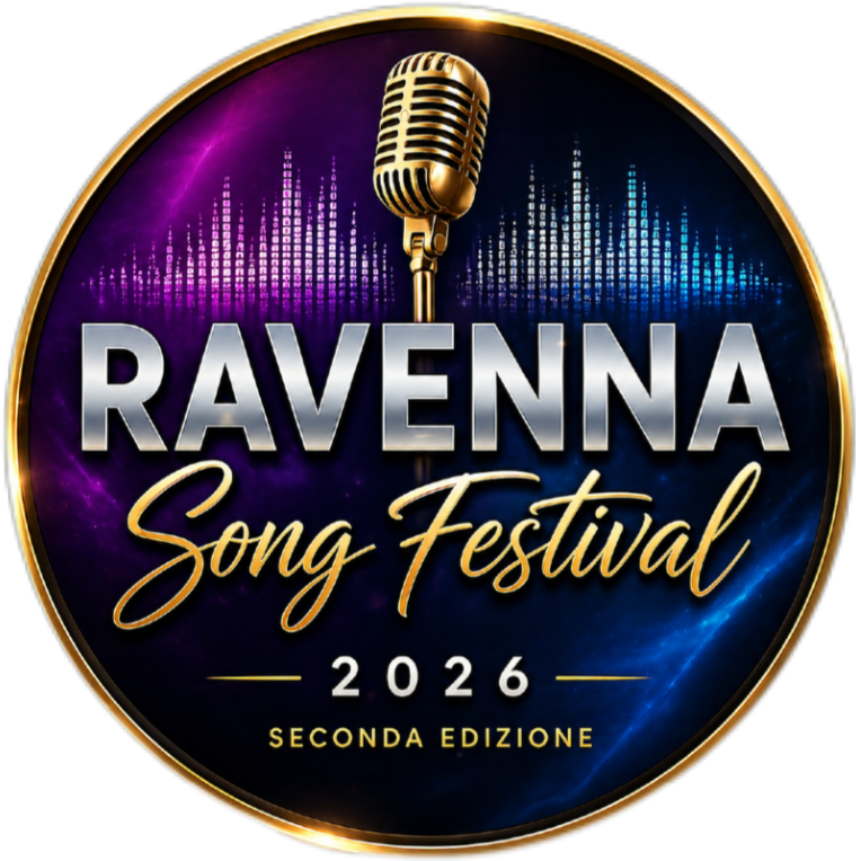

RAVENNA SONG FESTIVAL
Il festival dedicato alla voce, alla musica e ai nuovi talenti.

SECONDA EDIZIONE · 2026
EDIZIONE CONCLUSA · 6 OTTOBRE 2026

MERCATO COPERTO · RAVENNA
UNA SERATA DI MUSICA, TALENTO ED EMOZIONI
114 iscritti, 39 finalisti e quasi 200 persone presenti per la seconda edizione del Ravenna Song Festival.
I VINCITORI
BABY
1° AnnaSole Dalmonte
2° Natalia Molone
3° Luigi Di Iorio
GIOVANI
1° Francesco Paolo
2° Omar
3° Sofia Paolini
BIG
1° Valentina Carinelli
2° Giulia Rossi
3° Jessica Doccioli
SENIOR
1° Paolo Romboli
2° Rino
3° Maury
Ideato e diretto artisticamente da Jonathan Paladini. Media partner: Radio Studio Delta e TeleRomagna.
IL PERCORSO VERSO LA PROSSIMA EDIZIONE RIPARTE A GENNAIO.
114 iscritti, 39 finalisti e quasi 200 persone presenti per la seconda edizione del Ravenna Song Festival.
I VINCITORI
BABY
1° AnnaSole Dalmonte
2° Natalia Molone
3° Luigi Di Iorio
GIOVANI
1° Francesco Paolo
2° Omar
3° Sofia Paolini
BIG
1° Valentina Carinelli
2° Giulia Rossi
3° Jessica Doccioli
SENIOR
1° Paolo Romboli
2° Rino
3° Maury
Ideato e diretto artisticamente da Jonathan Paladini. Media partner: Radio Studio Delta e TeleRomagna.
IL PERCORSO VERSO LA PROSSIMA EDIZIONE RIPARTE A GENNAIO.
CHIEDI INFORMAZIONI PER ISCRIVERTI AL 2027
La nuova edizione riparte a gennaio 2027 con nuove audizioni. Contattaci su WhatsApp per ricevere informazioni sulle iscrizioni.
FOTO E VIDEO DEL FESTIVAL · INSTAGRAM
Apri il profilo ufficiale per vedere le fotografie, i video e gli aggiornamenti del Ravenna Song Festival.
GIURIA 2026
Scopri i componenti della giuria della seconda edizione del Ravenna Song Festival.
GIURIA RAVENNA SONG FESTIVAL 2026
I protagonisti della giuria della seconda edizione.
Emanuela Cortesi
Maestro Maurizio Tirelli
Chiara Bella
Alessandro Braga
Matilde Montanari
Daniele Tigli
Sonia Zanzi
Ruggero Ricci
Stefano Pelloni
ISCRIZIONIRAVENNA SONG FESTIVAL 2027
Vuoi salire sul palco del Ravenna Song Festival 2027? Compila il modulo con i tuoi dati e i tre brani che proponi.
La compilazione del modulo non equivale ancora all’iscrizione ufficiale. Le modalità di conferma saranno comunicate dall’organizzazione.
LA TUA CANDIDATURA